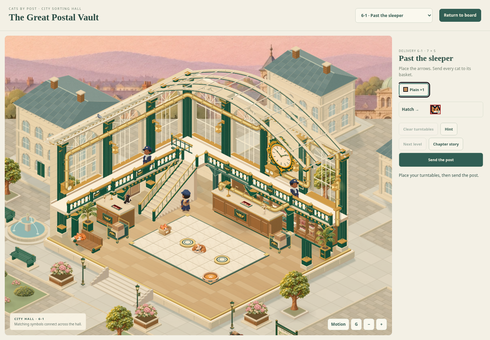
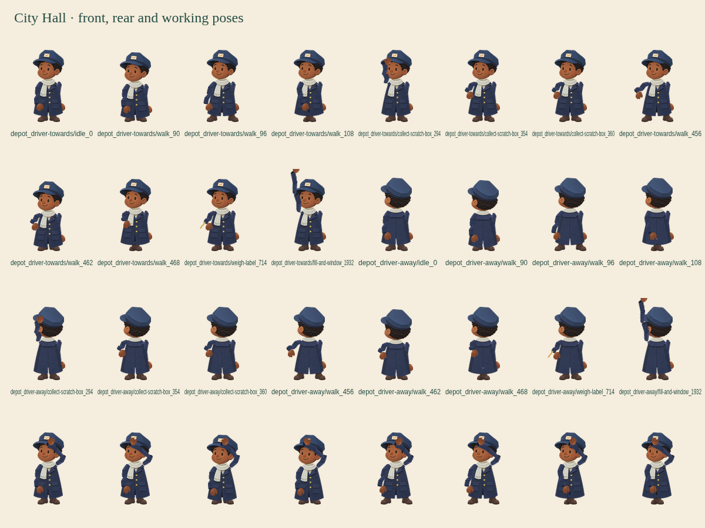
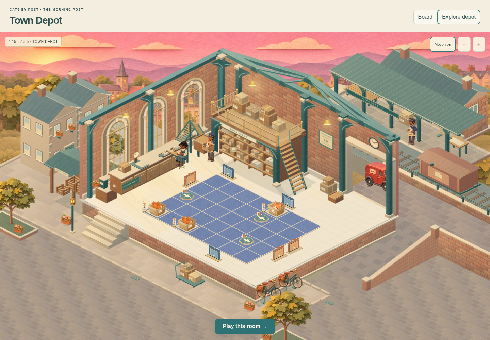
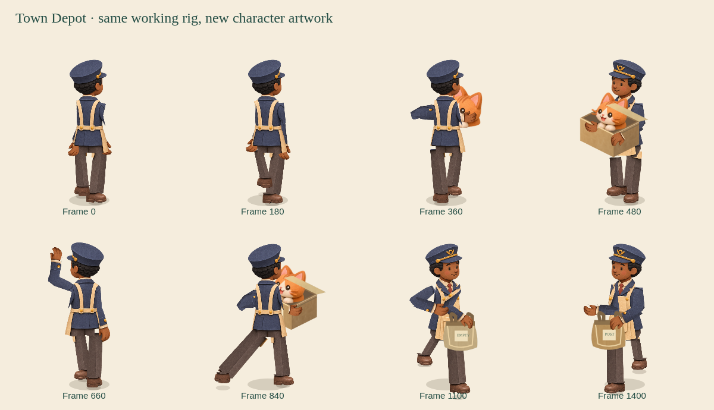
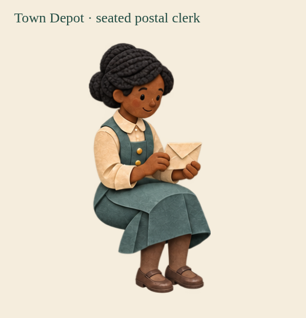
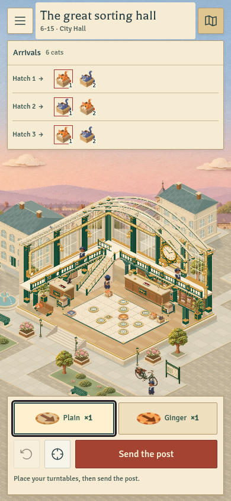
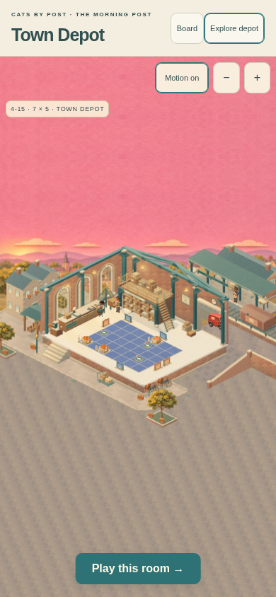

1. Setting and structure
Connect the hall to a convincing civic block and square. Give piers, arches, roof joints and plinths more depth while preserving the chosen height and board perspective.
Updated City Hall and Town Depot, including the Depot’s seated clerk. Front and rear views, working hands and carrying poses use the new artwork in the existing animation rigs.
These are updated review builds. Sorting Office is being handled separately.






No—not yet. Its height, clock and green-and-brass identity are strong foundations. Town Depot and Sorting Office have more convincing structural weight, stronger colour grouping and a more complete surrounding world. Functional checks do not establish artistic parity.
The next work needs to improve the whole composition. The broad pale paving, repeated nearby facades and thin roof structure matter more now than another set of small decorations.
Connect the hall to a convincing civic block and square. Give piers, arches, roof joints and plinths more depth while preserving the chosen height and board perspective.
Separate warm interior, cooler distance and richer green shadows. Make both walls, glass, stone and floor respond consistently to one light direction.
Bring texture, prop scale and purposeful activity together. Review the whole scene beside the references at matched board size and in the actual phone layout.
Read the detailed gap assessment and acceptance criteria
City Hall: 43 focused tests, 72 browser checks and all 15 deliveries. Phone controls: 44 checks. Town Depot: all 25 deliveries and 721 board picks. Board images remain unchanged in both rooms. These checks establish functionality; visual acceptance and physical-device testing remain open.